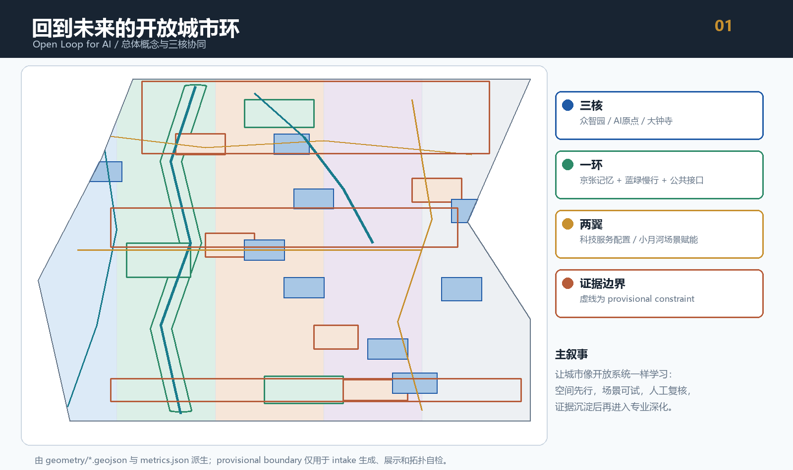
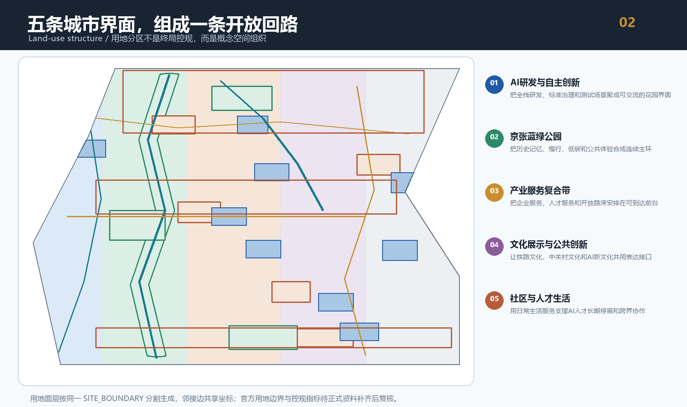
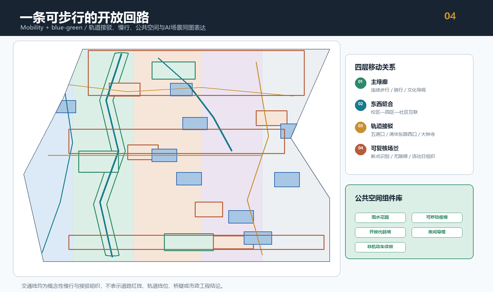
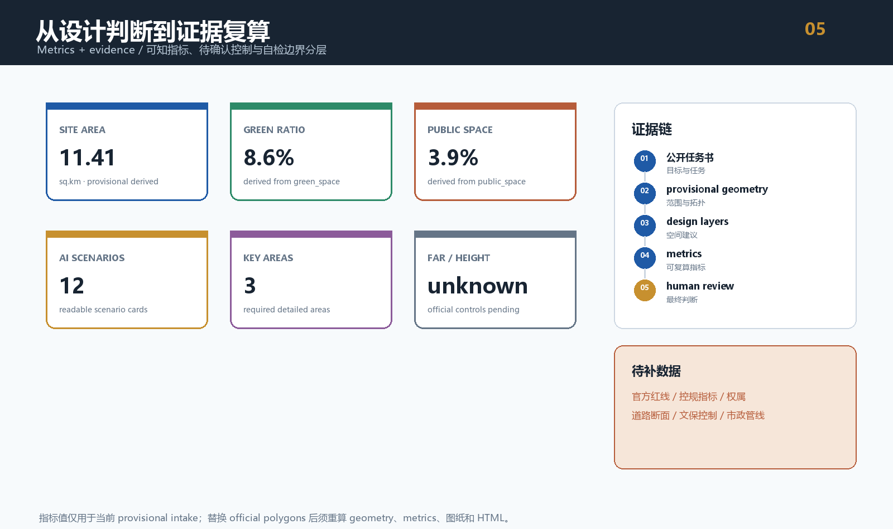
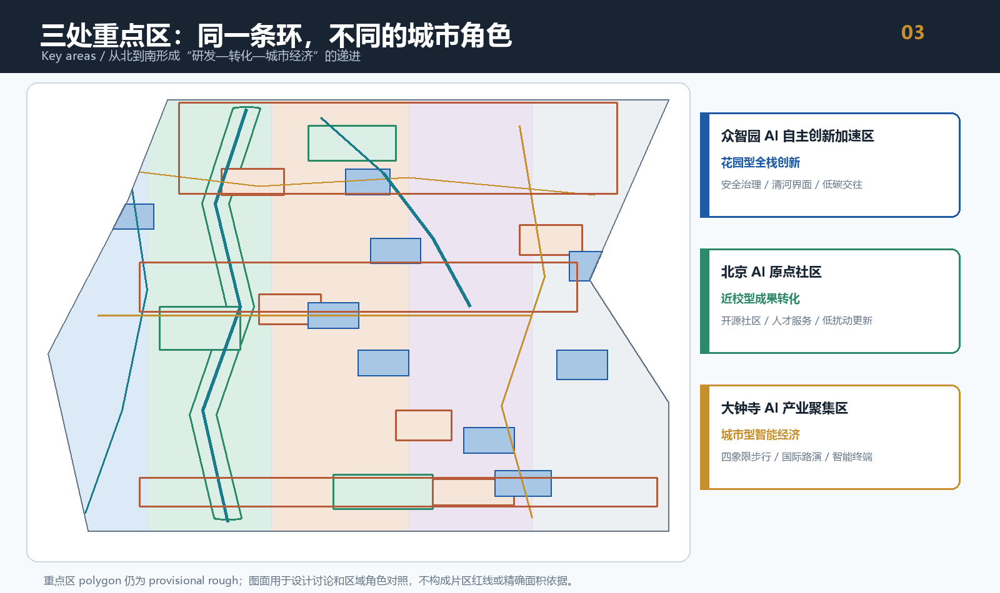

统筹研究范围
43.6 平方公里：AI创新链、人才链、算力算法数据和全球协同。
- 三区两翼
- 5-8 个案例
- 品牌与国际传播
Open Loop for AI：以京张铁路记忆为公共主轴，以众智园、北京AI原点社区、大钟寺为三个创新锚点，用开放场景、人工复核和可追溯证据把 AI 转译为可学习的城市接口。
真实由本提交包 geometry 与 metrics 派生的主图。虚线表示 provisional constraint，粗线表示设计主轴与慢行网络。

官方控规条件待补，不制造伪精确结论。
统筹研究范围提出产业生态与未来城市形态，总体设计范围转成空间结构与更新框架，重点区域完成三区详细设计和场景落点。
43.6 平方公里：AI创新链、人才链、算力算法数据和全球协同。
11.4 平方公里：城市更新、用地组织、轨道接驳、蓝绿公共空间。
368.4 公顷：众智园、AI原点社区、大钟寺三个详细设计角色。
三处重点区共享开放城市环，但分别承担自主创新、成果转化和城市型智能经济三种不同角色。
以全栈自主创新和安全治理为内核，以清河界面、产业展示和低碳交往形成花园型创新前台。
以近校成果转化和开源协作为内核，以人才服务、成果发布和低扰动更新形成社区型创新前台。
以智能体、智能终端和内容消费为内核，以轨道四象限步行连通和国际路演形成城市型经济前台。
所有空间动作均为概念建议、参考方案或可供专业团队深化研究；未取得控规、权属、文保、道路红线和市政资料，不构成工程结论。


12 张场景卡覆盖产业测试、公共空间和生活服务；每张卡都需要公开数据、隐私边界和人工复核才能进入试点。
成果发布、代码贡献展示和小型路演。
模型评测、标准工作坊和红队测试展示。
待深化的新型基础设施原型。
用公开数据和人工复核识别断点。
绿色空间、雨洪与AI展示复合。
孵化、展示、法务和知识产权服务。
智能终端、内容消费和国际交往。
授权、可审计的数据服务前台。
医疗、教育、法律与生活服务的低侵入试点。
京张铁路、中关村与AI新文化叙事。
开发者节、开放日、竞赛和城市体验路线。
让每个智能体输出有来源、有风险、有退回机制。
指标、矩阵和图纸由同一套结构化数据支撑；缺失的官方控制条件被保留为 unknown，而不是被设计值掩盖。


compliance_matrix.json 覆盖公告 1.3、1.4、1.5 和 agent.1-agent.6；正文同步解释命名、生态案例、场景卡、朝圣地标、文化叙事与长期运营。
最终运行 deterministic validation、spatial review、visual packaging check 与 professional evidence review。provisional 边界是 intake 警示，不是内容阻断。
来源见 sources.json；待补官方红线、控规、权属、建筑、道路、文保和市政条件见 assumptions.json。所有建议保留人工复核边界。